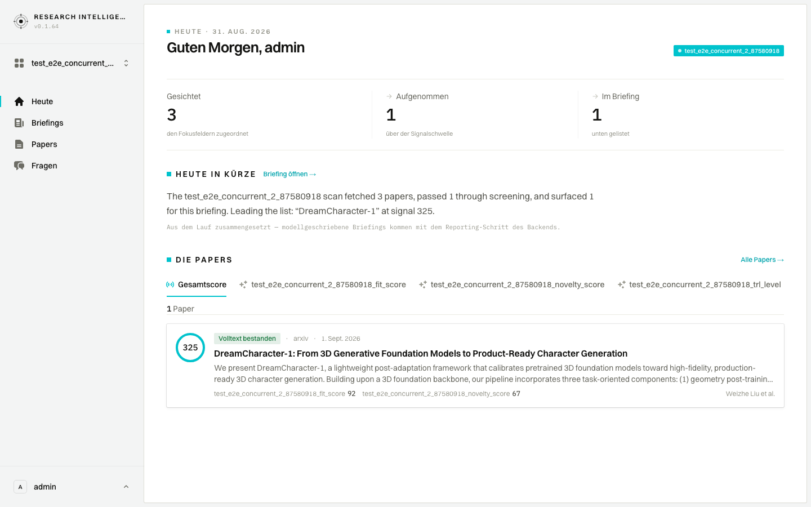
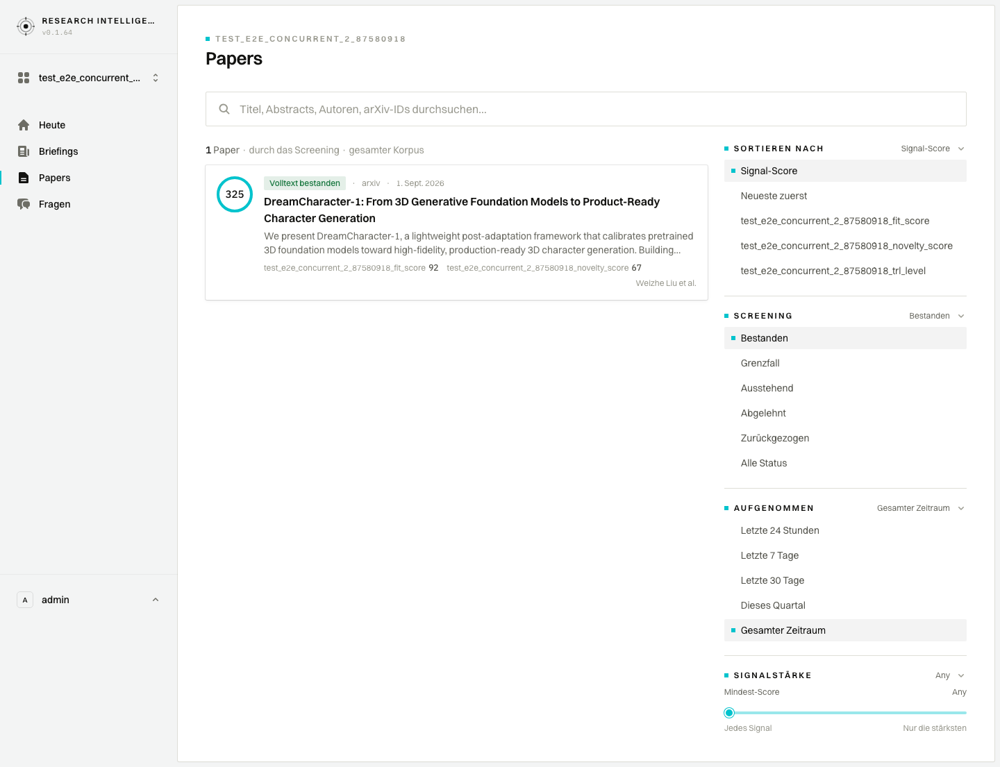
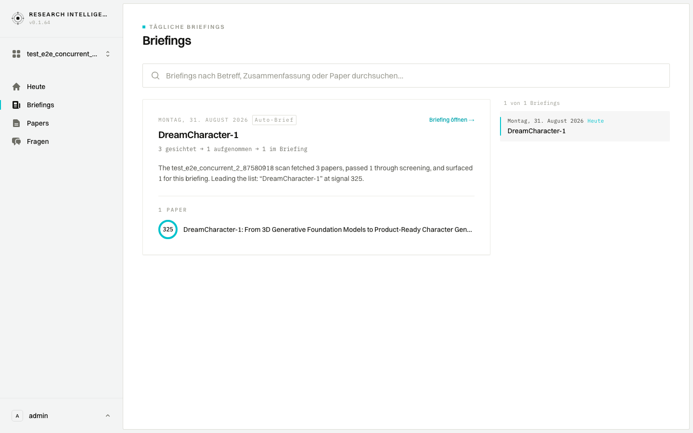
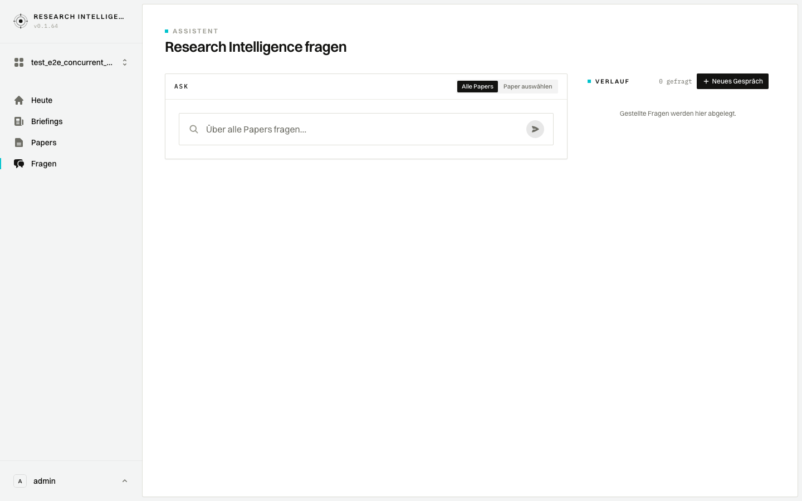
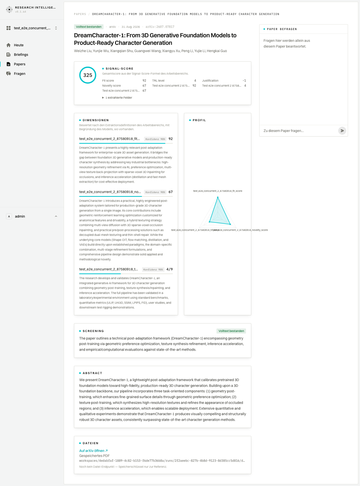

German / English audit — Research Intelligence
Static analysis of the i18n layer (frontend/src/lib/i18n*.ts, src/locales/de/), every t() call in the frontend, the backend's language handling, and a German + English screenshot pass over all nine screens against the 2026-08-31 prod snapshot. Audited at main @ e78847e, 1 Sep 2026.
docs/i18n-backlog.md (PR #15) — that file, not this page, is the live to-do list.
This page is kept as the reasoning and the evidence behind them: the screenshots below are the pre-fix state.
1 · Evidence — German UI on the prod snapshot (pre-fix)







rs-lang=de — 100% English, no language control.



Full sets: German desktop · English desktop · German mobile. German mobile overflow: /briefing +375px, /settings +132px (English was +17px in local-docs/open-items.md — the German labels widen the workspace definition list), /papers +15px, /papers/[id] +14px.
2 · Mechanics — best-practice findings
| Prio | Finding | Where / fix |
|---|---|---|
| P0 | <html lang="en"> is hardcoded, so German pages declare English. Screen readers pick the English voice, hyphens:auto/spellcheck use the wrong language, and browsers may offer to “translate” German UI. | src/app/layout.tsx:56. Root layout is already dynamic (cookies are read one level down) — read rs-lang here and set lang. |
| P0 | No language negotiation. Without the cookie getLang() returns 'en'; Accept-Language is never consulted. A German-browser user starts in English and has to find the toggle under the avatar menu. | src/lib/i18n-server.ts:5-8, src/proxy.ts. In the proxy: if no rs-lang, derive from Accept-Language and set the cookie once. |
| P0 | Login is English-only — heading, helper text, labels, button, footer, the “session expired” notice and all route-handler errors (“The backend is unreachable…”, “Those credentials did not match…”). It is the first screen a counterpart sees. | src/app/page.tsx, src/app/login-panel.tsx, src/app/auth/login/route.ts:20-83. Wrap in t(); return an error code from the route and translate client-side. |
| P0 | Frontend-composed prose is English in the German UI. templateProse() builds “The {ws} scan fetched 3 papers, passed 1 through screening, and surfaced 1 for this briefing…” and it renders under Heute in Kürze / In Kürze. The file comment says “English only — generated content is never translated”, but this is a template, not model output. | src/lib/bff/briefings/prose.ts:24-38. Either give templateProse a lang (it is pure and unit-tested — easy) or stop rendering it in German and show the funnel numbers only. |
| P0 | Engineering copy visible to users (both languages): “Assembled from the run — model-written briefs arrive with the backend’s reporting step.”, “Not yet persisted by the backend — saved for this session only.”, “No file endpoint yet — storage key shown for reference.”, “Membership is managed in the backend.”, raw cron 0 9 * * 5 as “Digest schedule”, problem titles “Backend response did not match the contract” / “Not implemented by the backend yet” surfacing via problem.detail ?? problem.title. | dashboard/page.tsx:124, settings/page.tsx:72, de/settings.ts, papers/[id]/page.tsx, papers/page.tsx:151, lib/bff/core/problem.ts:25-35, settings-form.tsx:80. Rewrite in user terms or gate behind a dev flag; render the cron as “Fridays 09:00”. |
| P1 | Coverage is unguarded. Keys are the English strings (gettext-style — fine, documented), but editing English copy silently drops the German with only a dev-time console.warn. No test checks the dictionary, and CI runs only Django tests + Docker build — no bun test/lint/typecheck. Today: Any missing (visible), Readiness defined twice with different values (Reife vs Reifegrad; dashboard wins by spread order), 91 dead keys. | .github/workflows/ci.yml, src/lib/i18n.ts:19-26. The audit script used here (scratchpad/i18n-audit.ts) is a ready-made bun test: fail on missing keys, conflicting duplicates and placeholder mismatch; warn on dead keys. |
| P1 | Dates: three English locales and no time zone. formatDate uses en-US (“Aug 31, 2026”) while the Ask history rail, briefing dates and Studio use en-GB (“31 Aug 2026”). formatDate and dayLabel pass no timeZone, so server-rendered dates use the container’s zone (UTC on Cloud Foundry) and client-rendered ones the browser’s: 2026-06-03T23:30Z → “Jun 3” on the server, “4. Juni” in a Berlin browser (verified in Node). | src/lib/i18n.ts:38-44, ask/history-rail.tsx:19, briefing/format.ts (does it right, UTC), studio/runs/page.tsx:36-55 (does it right, labelled UTC). One LOCALE = {en:'en-GB', de:'de-DE'} constant and an explicit timeZone:'Europe/Berlin'. |
| P1 | Numbers are not localised. Scores via toFixed(1) → “62.0” in German (should be 62,0); toLocaleString() with no locale in the token count; fmt() interpolates raw numbers (“1234 Papers”); “90%” without the German space (90 %). PRODUCT.md calls the numbers the product’s credibility. | components/scanner-ui.tsx:315, components/signal-ledger.tsx:41, ask/scanner-turn.tsx:251, papers/[id]/page.tsx:241, lib/i18n.ts:31. Add formatNumber(n, lang, opts) on Intl.NumberFormat; let fmt format numeric vars. |
| P1 | Plurals are ad hoc. 1 paper/{n} papers is special-cased in one place and nowhere else: 1 Fragen ({n} turns), 0 gefragt, {n} hits, {n} tokens, {n} of {total} claims grounded. | briefing/edition-browser.tsx:142 vs ask/history-rail.tsx:72,167, ask/ask.tsx:301. A 10-line plural(n, one, other) on Intl.PluralRules, or one|other keys. |
| P1 | Untranslated accessibility strings and tab titles. aria-labels “Previous page”, “Next page”, “Open/Close navigation”, “Loading”, “Breadcrumb” are hardcoded in shared components; /papers and /settings export static metadata.title (“Settings · Research Intelligence” in German mode) while the other pages use generateMetadata + t(); root description is English only; the Ask console eyebrow “ASK” is hardcoded. | components/pagination.tsx:20,48, sidebar-layout.tsx:40,71, stacked-layout.tsx:40,68, ui/spinner.tsx:9, scanner-ui.tsx:16, papers/page.tsx:10, settings/page.tsx:10, ask/ask.tsx. |
| P1 | German widens the mobile layout. Settings overflows 132px in German vs 17px in English; briefing 375px. Long German labels (Extraktionsdefinitionen) plus unbroken values in the definition list. | settings/page.tsx workspace card, briefing/edition-browser.tsx. Re-run bun run screenshots --lang de --viewports mobile after fixing; the script reports overflow per shot. |
| P1 | Studio is English-only (41 hardcoded strings, static titles “Runs”/“Run”, nav item “Briefings app”). Fine if it is operator-only, but it shares the shell and the German toggle, so it looks unfinished rather than intentional. | src/app/studio/**. Decide: translate, or label it as an English operator console in the nav. |
| P2 | Small things. The rs-lang cookie is set without Secure (auth cookies have it) and keeps the legacy rs- prefix vs sri_*; the e2e “bilingual” step only toggles twice and asserts nothing (and its locator looks for “English”, which the menu never shows — it always reads “Deutsch” with a switch); the greeting fallback there → zusammen is colloquial; 'Good morning' is shown at 16:00 too. | lib/i18n-client.tsx:19, tests_e2e/pages/SidebarNav.ts:27, specs/03_…spec.ts:47-51, dashboard/page.tsx:34,83. |
Backend and content language (a decision for the Schwarz Digits conversation)
- Everything generated is English by default and nothing is configurable: chat system prompt has no language instruction (
backend/chat/engine/orchestrator.py:73-80) so a German question gets whatever the model chooses; the briefing narrative (tasks/step_7_reporting/narrative.py) and digest e-mail (templates/emails/pipeline_digest.html, subjects intasks/auxiliary/email_digest.py:228-230) have no language parameter; the MCP server mandates English output (mcp_server/server/app.py:280). - Django:
LANGUAGE_CODE='en-us', noLocaleMiddleware(django_project/settings.py:98-108, 214); the BFF forwards onlyAuthorization(src/lib/api/server.ts:35-42). Consequence: DRF/password-validator messages (“This password is too short…”) reach the German settings form in English. Django ships German for all of these —LocaleMiddleware+ forwardingAccept-Language: defrom the BFF is nearly free. - Recommendation: state the policy explicitly in the UI/docs (“Research content is shown in the language of the source; the interface is available in German and English”), add a workspace-level
languagefor narrative + digest, and add “Answer in the language of the question” to the chat prompt. English content + German chrome is defensible for a paper scanner — but it should be a stated choice, not an accident.
3 · Word choice — German dictionary
Register is consistently formal (Sie/Ihr) and typography is right („“, –, …). Loanwords Paper/Papers, Briefing, Screening, Score, TRL are the right call for a Schwarz Digits audience — the issues below are consistency and a few genuine mis-hits.
| Prio | English | Current German | Issue → suggestion |
|---|---|---|---|
| P0 | auto-brief | Auto-Brief | False friend — Brief = letter, so the chip reads “automatic letter”. → Auto-Briefing or automatisch erstellt. (de/briefing.ts) |
| P0 | Reading the full text… / Reading “{title}” / Scanning {n} papers / Showing {from}–{to} of {total} | Lese den Volltext… / Lese „{title}“ / Scanne {n} Papers / Zeige … | First-person without subject is chat-casual; German UIs use passive or noun phrases. → Volltext wird gelesen… / {n} Papers werden durchsucht… / {from}–{to} von {total}. Elsewhere the same dictionary uses third person (Zeigt die {n} Papers) — one voice. |
| P0 | {n} asked · {n} turns | {n} gefragt · {n} Fragen | 0 gefragt is not German; 1 Fragen is wrong. English “turns” is chat-engine jargon too. → {n} Fragen with a singular, EN “{n} questions”. |
| P0 | Any | — (missing) | Falls back to English in the Signalstärke and TRL filters. → Beliebig (or Alle). |
| P1 | Workspace | Arbeitsbereich (15×) / Workspace (2×) | de/ask.ts “der Workspace umfasst” and de/briefing.ts “in diesem Workspace” break the convention. → Arbeitsbereich everywhere (or decide on the anglicism and switch all 17). |
| P1 | Included · Ingested | Aufgenommen · Aufgenommen | Two different states, one word — the papers filter header AUFGENOMMEN (ingest window) and the funnel column Aufgenommen (in the briefing) now mean different things. → Ingested = Erfasst. |
| P1 | Readiness | Reife / Reifegrad | Conflicting duplicate across modules. → Reifegrad; delete the other. |
| P1 | Screened out · Nothing was screened out | Ausgesiebt · aussortiert | Ausgesiebt is colloquial (“sieved out”) and inconsistent with the sentence form. → Aussortiert. |
| P1 | Evidence · “how solid the evidence is” | Belege · Evidenz | Both terms in the same feature (paper chat prompt vs fallback). → Belege throughout; Evidenz is a false friend outside academic German. |
| P1 | Schwarz fit / Schwarz Fit · Fit score · “whatever the fit and novelty” | Schwarz-Eignung · Fit-Score · Fit und Neuheit | Half-translated: “fit” is Eignung in one place and the loanword Fit in the next. Also two English keys differing only in case. → Pick one term (Fit as a scored dimension name is fine) and one English spelling. |
| P1 | Overall score · Signal score / Signal Score | Gesamtscore · Signal-Score | Hyphenation inconsistent across Signal-Score, Fit-Score, Neuheits-Score, Mindest-Score, Gesamtscore; two English keys differing in case. → Gesamt-Score; merge the EN keys. |
| P1 | Target | Ziel | Reads as “goal”, not “scope”. → Fokus (aligns with the Ask page’s planned “Focus” direction) or Bezug. |
| P1 | Ask console · Ask (nav) · Ask the scanner · Ask Research Intelligence · Assistant | Ask-Konsole · Fragen · Scanner fragen · Research Intelligence fragen · Assistent | The feature has three names in each language, and de/ask.ts’s comment says the nav “Ask” stays English while de/chrome.ts translates it. → One name (“Ask” / Fragen); drop “the scanner”; Ask-Konsole → Fragen-Konsole or just Konsole. |
| P1 | briefing · digest · brief · edition | Briefing · Digest-Archiv / Digest-Zeitplan · Überblick · Ausgabe | Four English words for one thing, so German gets four too. → “Briefing” everywhere in both languages (Briefing-Archiv, Briefing-Zeitplan). |
| P1 | Conversation · Conversation history · New conversation | Gespräch · Gesprächsverlauf · Neues Gespräch | Gespräch is a human-to-human word; German chat UIs (Teams, Copilot) use Unterhaltung or Chat. Low risk, but worth aligning. |
| P1 | Confidence 90% | Konfidenz 90% | German sets a (narrow no-break) space before %: 90 % (DIN 5008). Fix in the number formatter, not the string. |
| P2 | Needs review | Prüfung nötig | → Prüfung erforderlich (formal register). |
| P2 | The answer failed. | Die Antwort ist fehlgeschlagen. | → Die Antwort konnte nicht erstellt werden. |
| P2 | All statuses | Alle Status | Correct Duden plural but reads like a typo. → Alle or Alle Stufen. |
| P2 | Minimum TRL / Maximum TRL | Minimales TRL / Maximales TRL | → Min. TRL / Max. TRL or TRL mindestens / höchstens. |
| P2 | Browse the full corpus → | Gesamten Korpus durchsuchen → | durchsuchen = search. → Gesamten Korpus anzeigen →. (Dead key today.) |
| P2 | surfaced | zutage gefördert | Mining metaphor, literary. → gefunden / identifiziert. (Dead today, likely to return with the briefing redesign.) |
| P2 | Deep-dived · deep dives | Vertieft · Tiefenanalysen | → Tiefenanalysen as the count label too. (Dead today.) |
| P2 | Good morning, {name} · there | Guten Morgen, {name} · zusammen | Time-independent greeting in both languages; zusammen is “everyone”, odd for one reader. → time-based or Willkommen zurück, {name}; drop the fallback word. |
| P2 | Staff · Analyst · Author strength · author | Mitarbeiter · Analyst · Autoren-Stärke · Autor | Generic masculine. Schwarz Gruppe’s corporate German uses gender-neutral forms in many channels (Mitarbeitende). A house-style decision to make before the demo, not a defect. |
English copy (native-speaker read for a non-native audience)
- Idioms that don’t travel: “deep-dived”, “surfaced”, “cleared the signal bar”, “pencil out”, “drill in”, “dig in”. Plain equivalents: “passed the threshold”, “analysed in depth”, “open”.
- Engineering vocabulary in user copy: backend, endpoint, storage key, contract, persisted, reporting step, extraction definitions, funnel, turns, tokens, grounded. Keep tokens/grounded if the audience is technical; drop the rest.
- Case inconsistency creating duplicate keys: “Signal score”/“Signal Score”, “Schwarz fit”/“Schwarz Fit”, “Headlines”/“Headline stories”.
- Spelling mix: PRODUCT.md uses UK (“Rigour”), login uses US (“authorized”). Pick one; en-GB matches the en-GB date choice above.
4 · Dead weight — 91 dictionary entries with no caller
Left over from the prototype (concept frame, radar quadrants, packet cards, fixture briefing summaries). Harmless at runtime but they inflate the file by 29%, hide the real coverage, and two of them are 400-character fixture paragraphs. Full list in scratchpad/i18n-audit.json → dead minus the 35 keys reached via t(x.label) (see dead-check output). Groups: concept-frame chrome (Hide core concepts, Phase 3a Concepts…, Tier 1 concepts, Designed for:), old dashboard (Engage early, Act now, Open radar, Fastest rising, Lead story, Headlines…), packet cards (Sent as {via}, Created {date}), workshop signals (Reproducibility, Code released…), pagination variants (← Prev, Next →, Pages), five fixture edition titles + four summaries, and the paper-chat suggested questions.
5 · What is already right
LanguageProvider once per render, the toggle rewrites the cookie and router.refresh()es so server components follow; shared server+client components take t as a prop with an identity default (scanner-ui.tsx, score-variables.tsx) and every caller passes it. Gettext-style context (nav|Ask) handles homonyms. Identity translations are deliberate loanwords, not omissions. The chrome/content boundary is documented in the dictionary header and in docs/backend-swap-notes.md. Edition dates and Studio timestamps set an explicit time zone. Fonts are self-hosted “for a German corporate deployment”. bun run screenshots --lang de exists and made this evidence cheap to gather.6 · Suggested order of work
| When | Do |
|---|---|
| P0 · done shipped in PR #16 |
|
| P1 this sprint | Locale constants (en-GB/de-DE) + explicit time zone; Intl.NumberFormat helper incl. percent spacing; plural(); run the frontend checks in CI (the dictionary test itself landed with P0); prune the dead keys; fix German mobile overflow; decide Studio. Tracked in docs/i18n-backlog.md. |
| P2 with Schwarz Digits | Content-language policy: Django LocaleMiddleware + forward Accept-Language; “answer in the language of the question” in the chat prompt; workspace-level language for narrative and digest e-mail; revisit the MCP English mandate; gender-neutral house style; unify briefing/digest/brief/edition and Ask/Assistant/scanner naming in both languages. |
Method: a regex sweep over every t() call in files that obtain a translator, cross-checked against the merged and per-module dictionaries, plus a literal search to separate dynamically-reached keys from truly dead ones. That check now lives in the repo as frontend/src/lib/i18n.test.ts and runs in bun test. Screenshots via frontend/scripts/screenshots.ts against a Next dev server and the replay backend on :8010 (snapshot sri-prod-2026-08-31) — see docs/i18n/README.md to regenerate them.